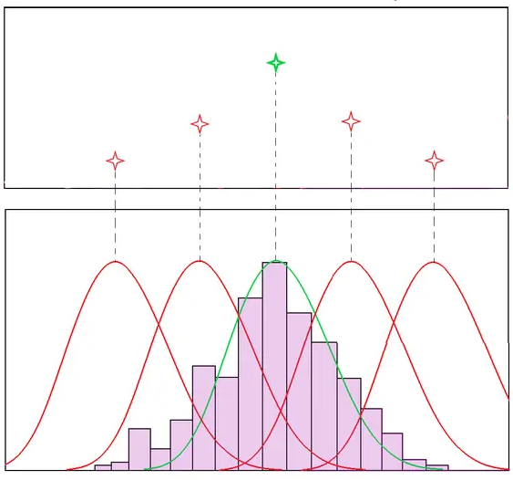
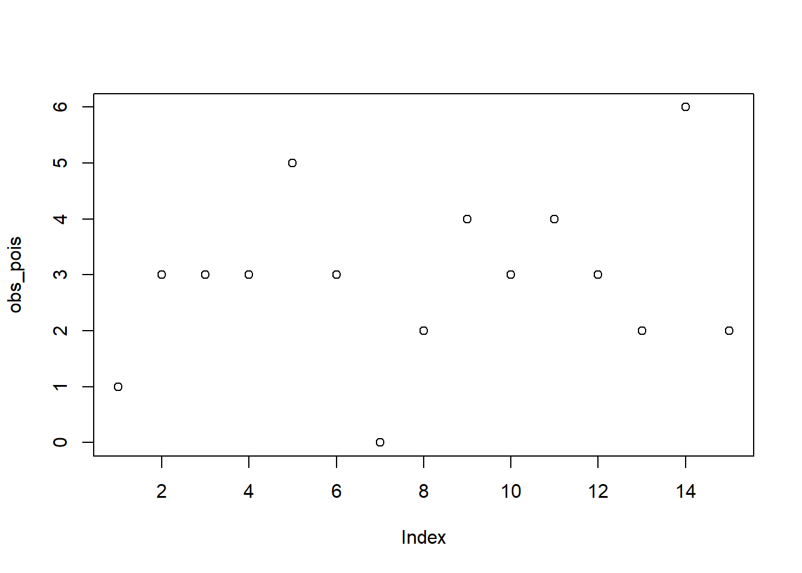
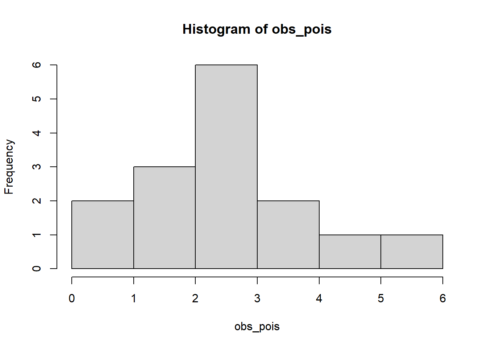
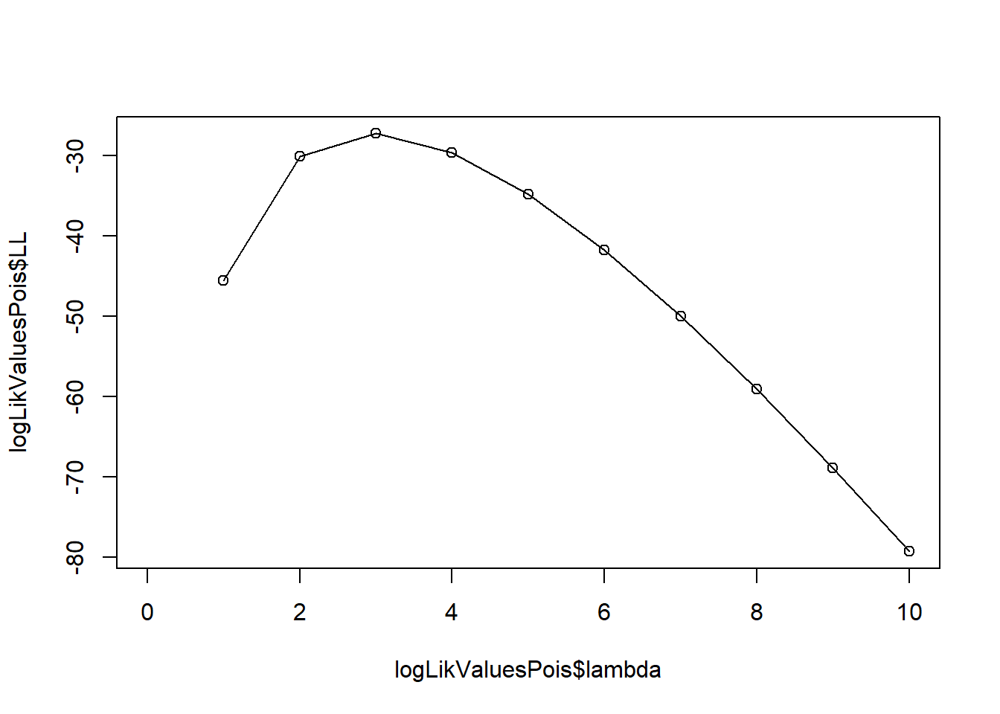
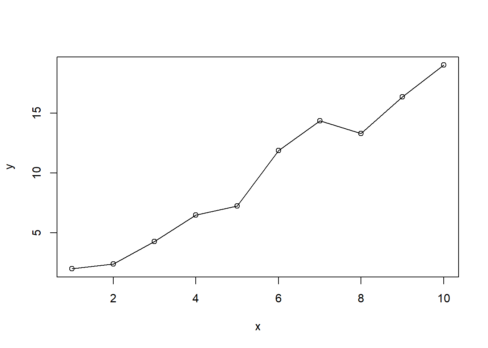

Under the hood: Maximum Likelihood Estimation (MLE)
Introduction

Maximum likelihood is a method for constructing an estimator for an unknown parameter \(\theta\), which was introduced by Fisher in 1912. Method can be applied in most problems and often gives a reasonable estimator for \(\theta\), and if sample size is big, the method will give an excellent estimator of \(\theta\). For these reasons, the method is most widely used estimation method in statistics \(^2\).
Maximum likelihood estimation can be described as follow: suppose that we observed \(X_1,\cdots,X_n\) from a distribution \(f(x|\theta)\). Then we define the likelihood function (the joint probability of the observed data viewed as a function of parameters of the statistical model) as
\[L(\theta)=f(x_1,\ldots,x_n|\theta)=f(x_1|\theta)\cdots f(x_n|\theta)\]
Since \(\text{log}\) is a monotonic increasing function, maximizing \(L(\theta)\) is equivalent to maximizing \(\text{log}L(\theta)\). Then we define the log-likelihood function as
\[l(\theta)=\text{log}L(\theta)=\text{log}\prod_{i=1}^n f(X_i|\theta)=\sum_{i=1}^n\text{log}f(X_i|\theta)\]
Maximizing \(l(\theta)\) with respect to \(\theta\) will give us the MLE \(^{2,3}\):
\[\hat{\theta}=\mathop{\mathrm{argmax}}_{\theta\in\Theta}l(\theta)\]
Examples
Estimate the distribution parameters
Assume that we observed \(15\) different \(X_i\) values from Poisson distribution with unknown \(\lambda\) (we simulate the data, so we know the true value of parameter \(\lambda = 3\)):
obs_pois <- rpois(15, 3)
plot(obs_pois)
hist(obs_pois)
Since we know that data is distributed as Poisson, we can write the likelihood and log-likelihood functions as:
\[ L(\lambda)=\prod_{i=1}^{n}\exp(-\lambda)\frac{1}{x_i!}\lambda^{x_i} \]
\[ l(\lambda)=-n\lambda-\sum_{i=1}^n\ln(x_i!)+\ln(\lambda)\sum_{i=1}^nx_i \]
Let’s estimate:
loglikMLEpois <- function(params, x_data) {
sum(dpois(x_data, lambda = params[1], log = TRUE))
}
estPois <- optim(c(lambda = 1), fn = loglikMLEpois, x_data = obs_pois, control = list(fnscale=-1), method="BFGS")
round(estPois$par, 4)lambda
2.9333 We estimated \(\hat{\lambda}=\) 2.9333 which is a good estimation.
Plot the log-likelihood function:
logLikValuesPois <- expand.grid(lambda=seq(0, 10, 1))
logLikValuesPois$LL <- apply(logLikValuesPois, 1, loglikMLEpois, x_data=obs_pois)
plot(logLikValuesPois$lambda, logLikValuesPois$LL, type="o")
Estimate the linear regression model parameters
Suppose that we observed 10 different \((x_i, y_i), \quad i=1,\ldots,10\) samples. For this, we generate some random data (Our data generation process is \(y = 2x-1+\epsilon\)):
x <- seq(1, 10, 1)
y <- 2 * x - 1 + rnorm(10)
tibble(x, y)Plot of our generated data:
plot(x, y, type="o")
We simulated the data, so we know the true parameter values, \(\theta=(\theta_0, \theta_1)=(-1, 2)\). Let’s try to estimate them with MLE.
If we assume that errors has the Normal distribution with mean zero and standard deviation one and error variance is constant, we get
\[ y~\sim N(\theta_0+\theta_1x,\sigma^2) \]
So we can write the conditional distribution as:
\[ f(y|x,\theta_0,\theta_1,\sigma^2)=\frac{1}{\sqrt{2\pi\sigma^2}}e^{-\frac{1}{2}\frac{(y-(\theta_1x+\theta_0))^2}{\sigma^2}} \]
Then we get following likelihood and log-likelihood functions:
\[ L(\theta_0,\theta_1,\sigma^2)=\frac{1}{(2\pi\sigma^2)^{n/2}}\prod_{(x,y)\in X}e^\frac{-(y-(\theta_1 x + \theta_0))^2}{2\sigma^2} \]
\[ l(\theta_0,\theta_1,\sigma^2)=-\frac{n}{2}\log 2\pi-n\log \sigma-\frac{1}{\sigma^2}\sum_{i=1}^n(y_i-(\theta_1x_i+\theta_0))^2 \]
Let’s define log-likelihood function in R:
loglikMLEreg <- function(params, y_data) {
x_data = x
sum(dnorm(y_data, mean = params[1] + params[2] * x_data, sd = params[3], log = TRUE))
}Maximize:
estReg <- optim(c(intercept = 0, slope = 1, sigma = 1), fn = loglikMLEreg,
y_data = y, control = list(fnscale=-1)
)
round(estReg$par, 4)intercept slope sigma
-1.0947 1.9684 1.0153 Our estimation is \(\hat{\theta}=(\)-1.0946921, 1.9683684\()\). We know that true values are \(\theta=(-1, 2)\) so this estimation is a pretty good.
Lastly, visualize our log-likelihood function with constant sigma:
library(reshape2)
library(plotly)
logLikValues <- expand.grid(theta_0=seq(-5, 5, 1), theta_1=seq(-5, 5, 1))
logLikValues$sigma <- 1
logLikValues$LL <- apply(logLikValues, 1, loglikMLEreg, y_data=y)
plot_matrix <- t(acast(logLikValues, theta_0~theta_1, value.var="LL"))
plot_ly(
x = as.numeric(colnames(plot_matrix)),
y = as.numeric(rownames(plot_matrix)),
z = plot_matrix
) %>%
add_surface() %>%
layout(
scene = list(
xaxis = list(title = "theta_0"),
yaxis = list(title = "theta_1"),
zaxis = list(title = "LL")
))Full source code: https://github.com/mrtkp9993/MyDsProjects/tree/main/MLE
References
\(^1\) https://media.geeksforgeeks.org/wp-content/uploads/20210415012617/MLEexample.png
{kind=link}
\(^2\) https://people.missouristate.edu/songfengzheng/Teaching/MTH541/Lecture%20notes/MLE.pdf
\(^3\) https://en.wikipedia.org/wiki/Likelihood_function?oldformat=true
Citation
@online{koptur2022,
author = {Murat Koptur},
title = {Under the Hood: {Maximum} {Likelihood} {Estimation} {(MLE)}},
date = {2022-10-01},
url = {https://www.muratkoptur.com/MyDsProjects/Analysis.html},
langid = {en}
}